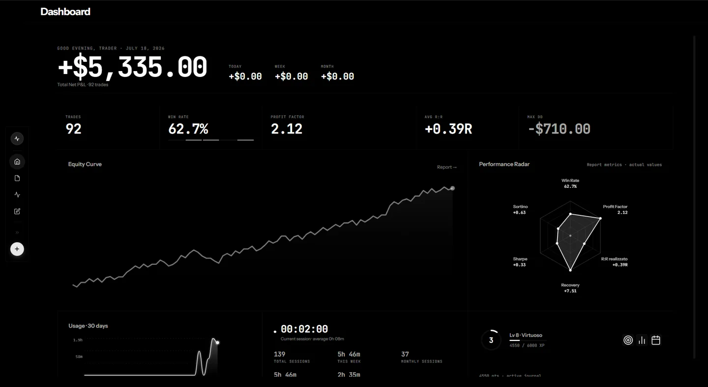
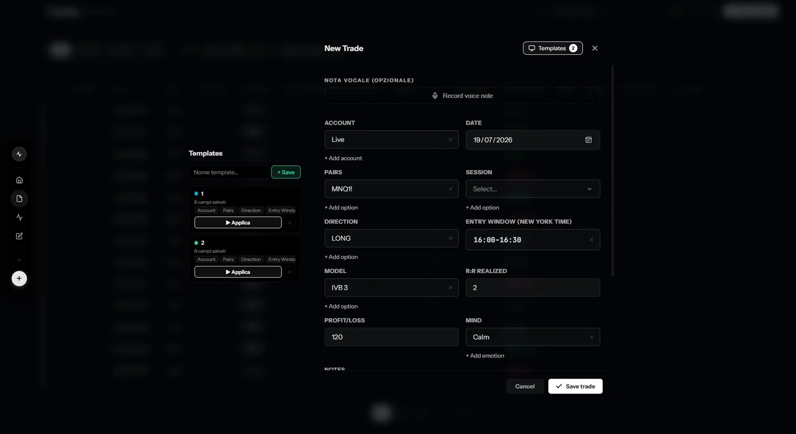
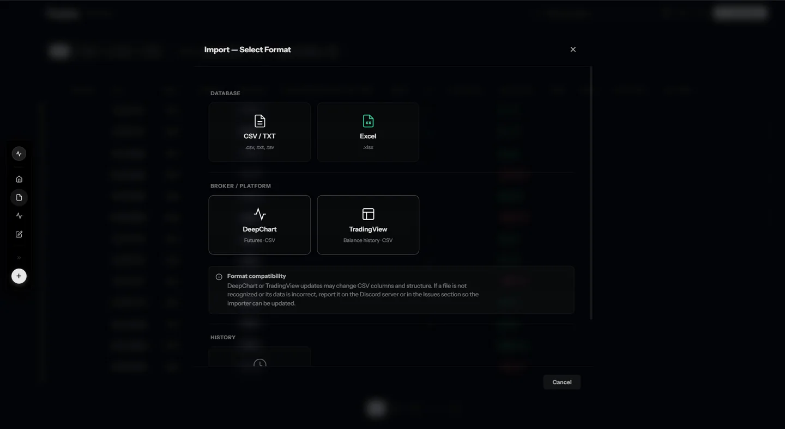
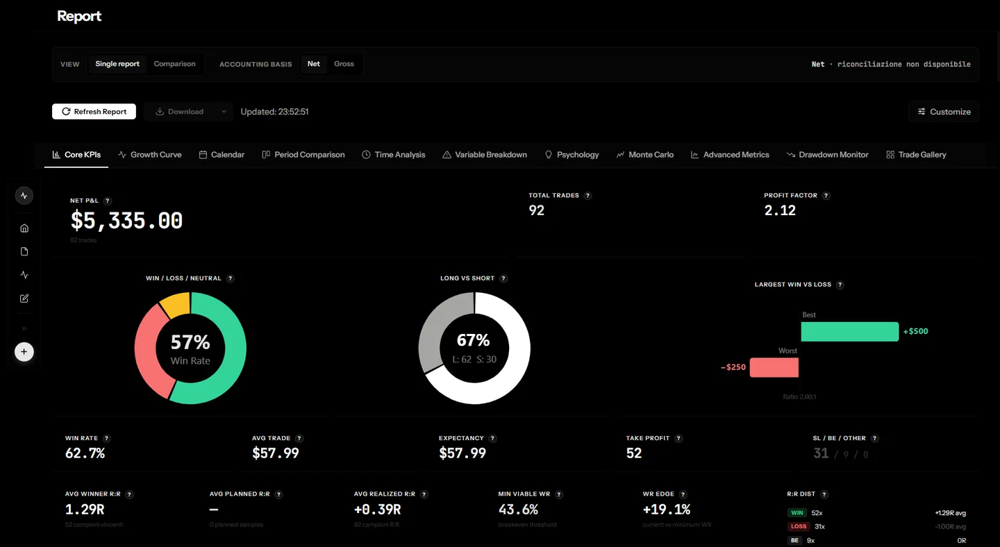
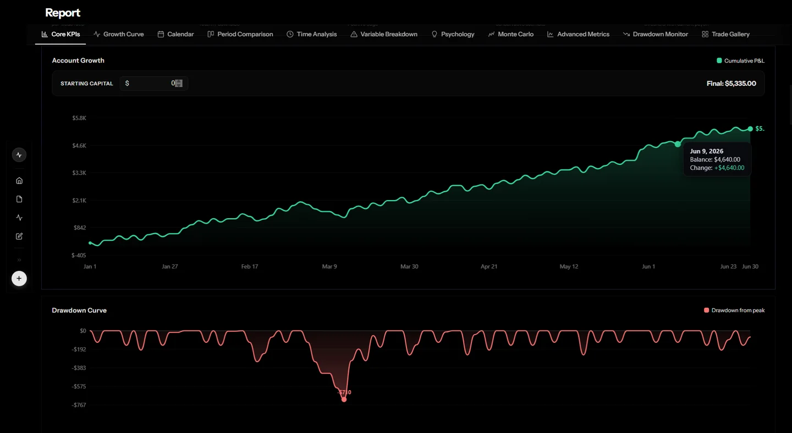
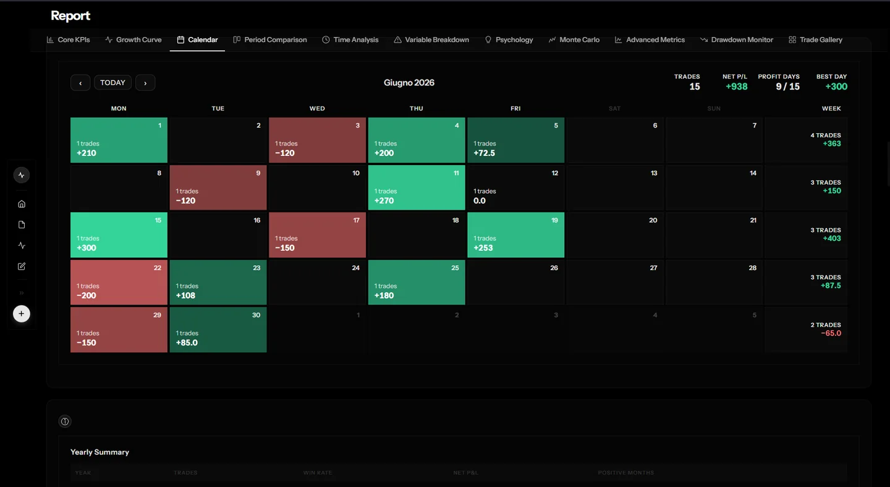
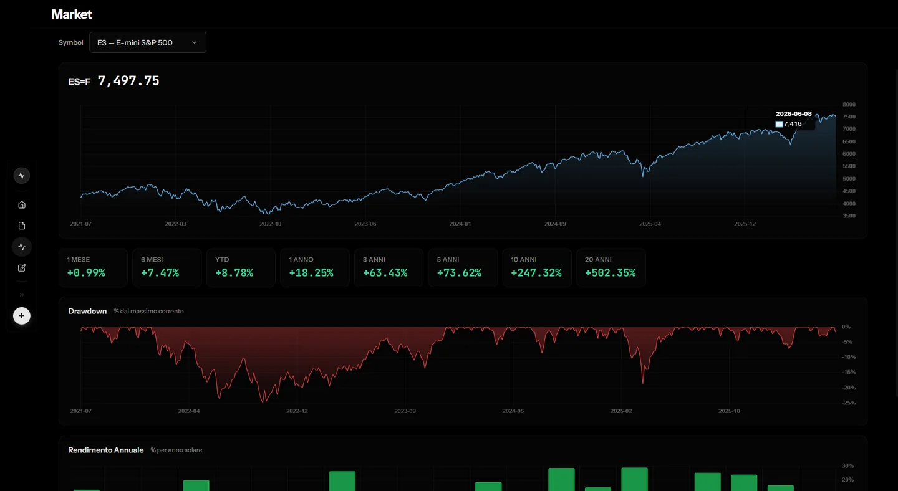

La situazione, in un colpo d'occhio
Metriche essenziali, andamento cumulativo e distribuzione dei risultati aprono la sessione con il contesto giusto.
Trading journal e analisi
1.1.4Nuova beta disponibile↘TapeSense porta operazioni, rischio e risultati nello stesso spazio. Non promette profitti: rende visibili i comportamenti che li influenzano.

01 Una lettura completa, senza cambiare strumento.
Dal caos alla chiarezza
Dati dispersiImportazioni, note e risultati partono come frammenti.
StrutturaOgni operazione trova il proprio posto nel diario.
ContestoEsito, rischio e disciplina diventano confrontabili.
DirezioneI singoli trade compongono una storia misurabile.
01 / Diario
Il nucleo operativo
Ordina, filtra e leggi le operazioni senza perdere il dettaglio. Le proprietà del journal sono configurabili e i dati restano sempre ispezionabili.


02 / Analisi
Dall'esecuzione al pattern
Le metriche acquistano valore quando restano collegate alle operazioni. TapeSense mette risultato, rischio e costanza nella stessa lettura.
Metriche essenziali, andamento cumulativo e distribuzione dei risultati aprono la sessione con il contesto giusto.
Profit factor, win rate, payoff e drawdown aiutano a separare il risultato dalla qualità del processo.
Equity, crescita e fasi di calo rendono visibile il percorso, non soltanto il punto di arrivo.
Il calendario mostra la distribuzione dei risultati nel tempo e facilita il confronto tra giornate e periodi.



DashboardInterfaccia reale di TapeSense
03 / Contesto
Il mercato accanto al diario
Tieni sotto osservazione il quadro di mercato mentre analizzi il tuo journal. Indici, volatilità e asset principali aggiungono contesto alle decisioni già registrate.
Il contesto informa l'analisi. Non genera segnali operativi.

04 / Guide
Parti senza dubbi
Due guide pratiche mostrano l’intero percorso: installare TapeSense in sicurezza e gestire il journal senza perdere informazioni.
Installazione
Segui il download, l’avviso di Windows e l’avvio iniziale. La guida è pensata anche per chi non ha familiarità con installer o SmartScreen.
Apri su YouTube ↗Gestione dati
Scopri come portare i dati nel journal, aggiungere nuove operazioni ed esportare le informazioni quando vuoi conservarle o trasferirle.
Apri su YouTube ↗I video usano la modalità privacy avanzata di YouTube e vengono caricati soltanto quando scegli di riprodurli.
05 / Controllo
Il tuo journal resta tuo
Il diario è archiviato sul dispositivo in un database SQLite dedicato.
Puoi creare copie del database ed esportare le operazioni quando serve.
TapeSense è uno strumento di journaling e analisi. Non è un broker e non fornisce segnali.
06 / Community
Segui lo sviluppo
Entra nel Discord ufficiale per segnalazioni e confronto sul prodotto, oppure segui i videotutorial sul canale YouTube di TapeSense.
Costruisci il tuo vantaggio sui fatti
TapeSense 1.1.4 è disponibile in beta per Windows 10 e 11 a 64 bit. I dati del journal restano sul dispositivo.
Scarica la beta per Windows Beta non firmata digitalmente. Windows può mostrare un avviso SmartScreen prima dell’installazione.